Being an account of a virtual workshop in traditional hand bookbinding, conducted with a master binder of the French and German traditions.
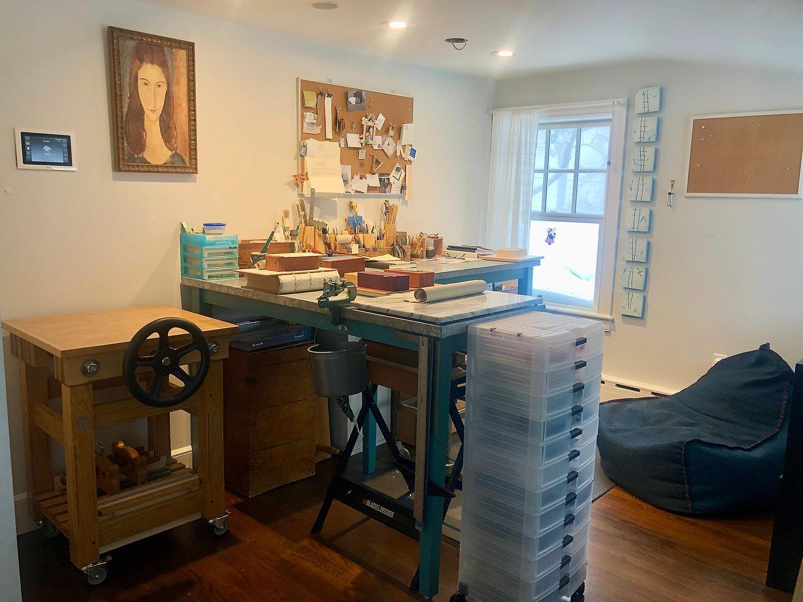
Echo Art Bindery — the working studio.
What does the practice of traditional hand bookbinding reveal about the history of the book — both as a cultural artifact and as a site of skilled, often invisible labor?
To approach this question, I conducted a workshop session over FaceTime with my aunt, a working binder trained in the French and German traditions and the proprietor of Echo Art Bindery. What follows is a folio assembled from her instruction, photographs of her studio, and the historical scholarship that frames the craft.
Her practice preserves a sequence of nearly sixty distinct operations — a sequence that machine production has, for two centuries, been steadily replacing.
When books were first being made, the sheets were sewn together — the sewing was done by women, and that's all they did was sew up the book box. — Workshop interview, 2026
The first body of the book is the text block: gatherings of folded sheets, called signatures, sewn through the fold onto cords or tapes. In the early trade this was women's work. The sewer handed the block to the forwarder; in the language of a 1904 sociological survey, the book at that point passed "into the hands of men, to be touched no more by women" (MacDonald 5).
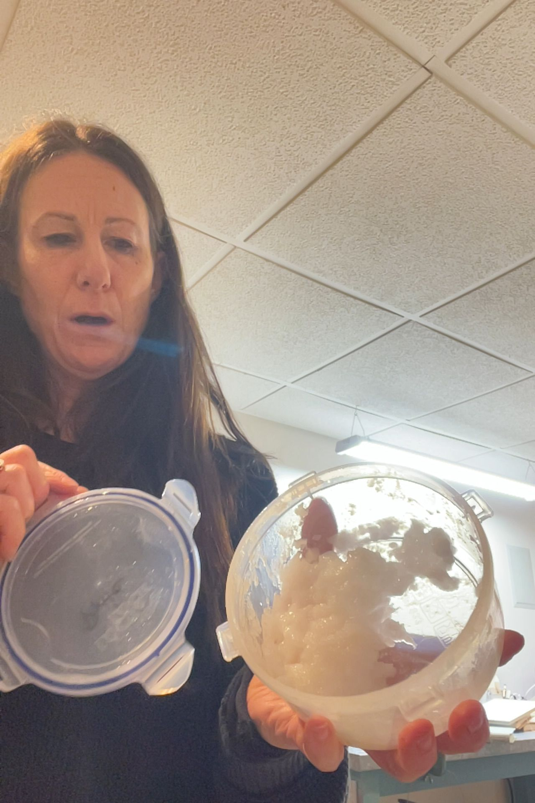
Fig. I. Wheat starch paste mixed from powder — one of two adhesives used alongside modern PVA at Echo Art Bindery.
I have a glue called PVA — when it dries, it turns into a plastic. Once the book is sewn, I apply PVA so there's no spaces between the signatures. — Workshop interview, 2026
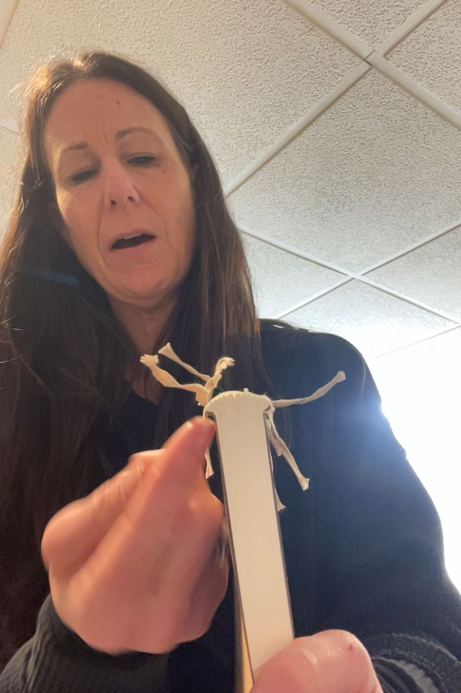
Fig. II. The binder holds the sewn block, cords still loose before gluing and rounding begin.
You round it on a hard surface — like a marble top. You take the book and kind of pull it, and then you hit it with the hammer while the glue is just almost set, but not entirely. — Workshop interview, 2026
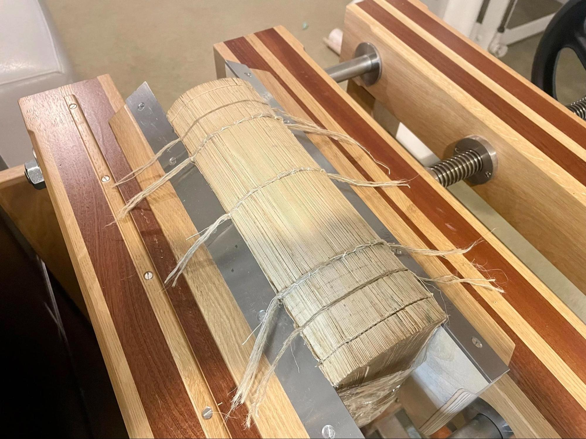
Plate IV. A rounded text block in the lying press, cord-ties visible along the spine before lacing into the boards.
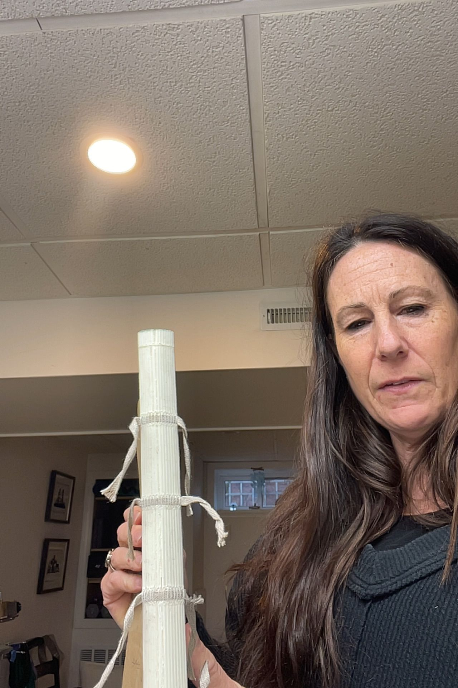
Fig. III. The binder demonstrates the cords that will be laced through the boards to seat them at the shoulder.
The boards are sitting right in the shoulder. When the board is on, it should match up perfectly level to where the book is. — Workshop interview, 2026
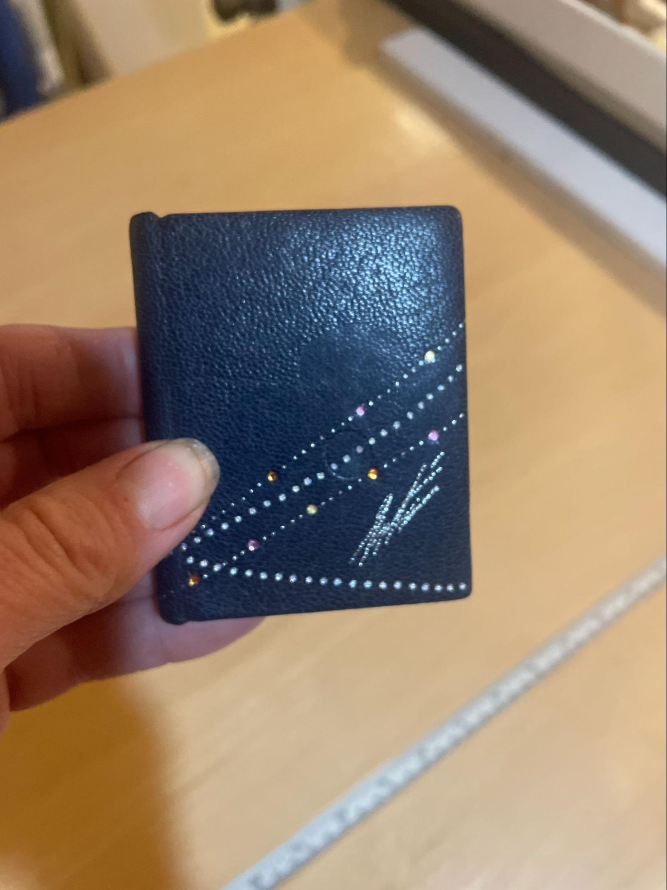
Fig. IV. A miniature binding with dot-pattern gold tooling — a student work from Echo Art Bindery.
It comes in a little book, it's very thin, and it sticks to everything. If you breathe, it floats away. It takes a huge amount of patience and skill. — Workshop interview, 2026 (on gold leaf)
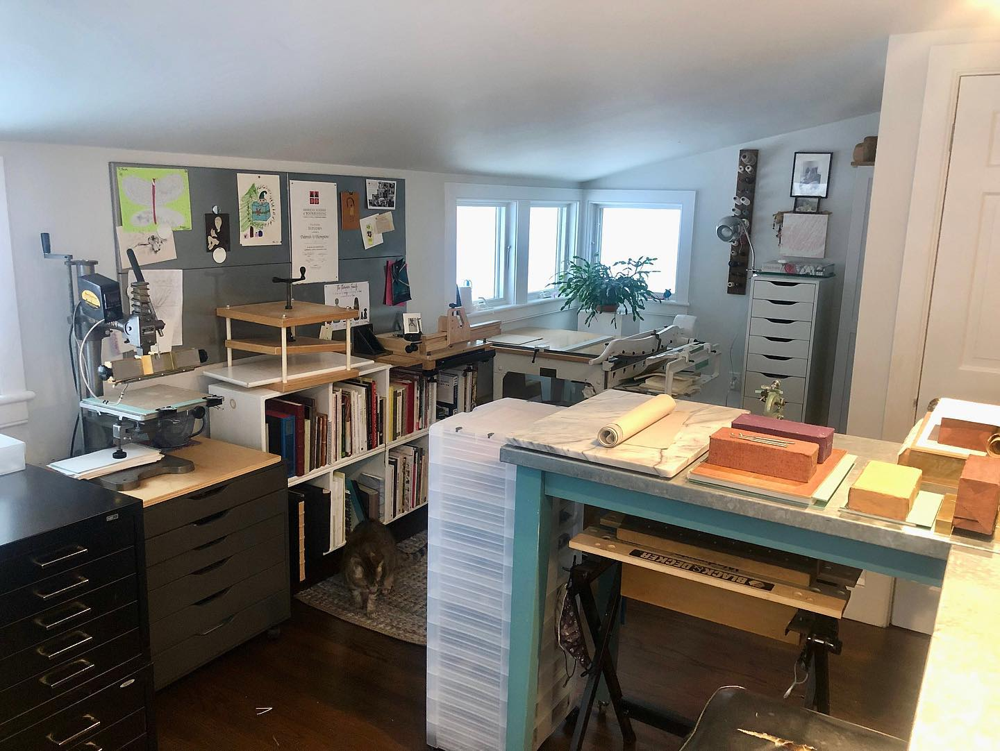
Plate V. Echo Art Bindery: the marble-topped bench, lying press, flat files, and accumulated apparatus of a working studio.
The trade my aunt practices is the descendant of a workshop economy that ran on hours so long and apprenticeships so unremunerated that the labor itself is barely visible in the historical record. Until 1772, English binders worked from six in the morning to nine at night; after a labor strife in 1786–87, London binders finally finished at seven (Middleton 258).
The apprentice who made the work possible was, in Middleton's phrase, "the unpaid but boarded and lodged apprentice" (258) — a labor arrangement that converts a person into infrastructure.
By 1913, when Mary Van Kleeck published her Russell Sage study of New York's binderies, the 1900 U.S. Census already counted some fifteen thousand women employed in American bookbinding (Van Kleeck 2). The gendered division of labor had only migrated into the factory.
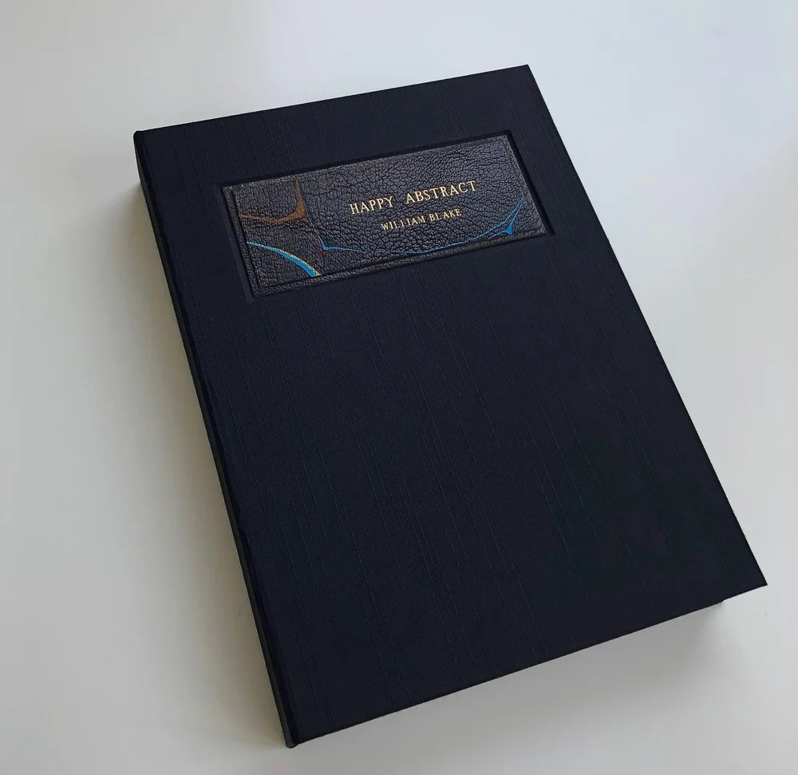
Plate VI. Happy Abstract by William Blake — a fine binding by Echo Art Bindery. Navy blocked cloth with leather onlay and gilt lettering.
Bookbinders are right at the crossroads of art and craft. Fine binding now is pretty not dissimilar from fine art — because doing art, instead of on a canvas, it's on a book. — Workshop interview, 2026
It's not a practical profession, that's for sure. But it was, back before industrialization put binders out of business. — Workshop interview, 2026
The mechanization of cloth-case binding in the 19th century hollowed out the trade. Of those who enrolled in my aunt's binding program, only a handful completed the full course; she is "the number 11" to finish. The economics no longer support the time the work requires.
The history of the book, as told in inventories of presses and sewing frames, is also a history of who was permitted to make it — and on what terms. Before the ledger could record a finished volume, a sewer had to set the signatures, a forwarder had to lace the boards, and an apprentice — usually unpaid — had to perform the tasks too tedious or too physical for the master.
Bookbinding survives today not because it is economically rational but because the structural problems it solves — how to make a hinge, how to round a spine, how to mount a board so the book opens fully — are not problems the machine has surpassed in quality, only in cost.
What the practice reveals, then, is that the book as an object remembers its labor. Each of the sixty steps leaves a trace; each absence leaves one too. To learn the craft is to learn how to read those traces.
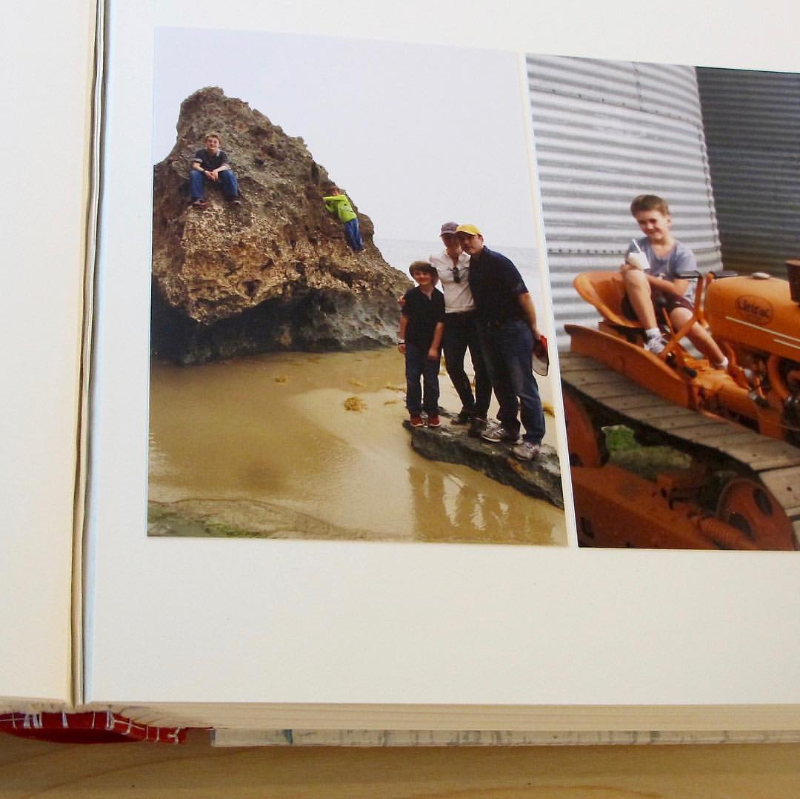
Fig. V. A hand-bound photo album — the kind of functional object that demonstrates what the book's structure protects and preserves.
"Books are common objects," my aunt observed near the end of our conversation, "but most people don't really know about the history of the book."
This folio is one small attempt at remembering: a sequence of operations, a pair of voices, and photographs from a studio where the trade is still alive.
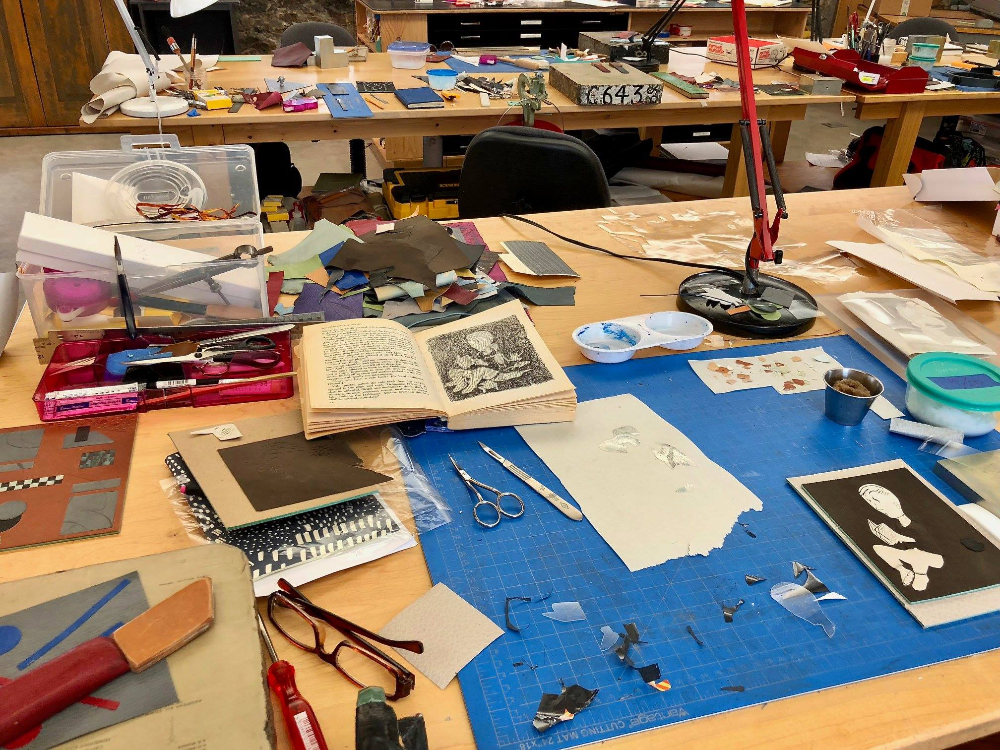
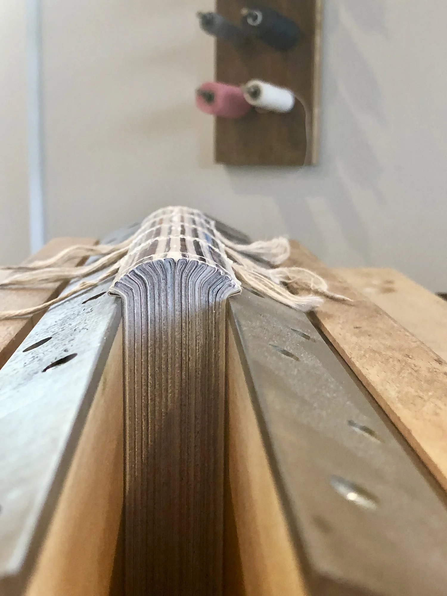
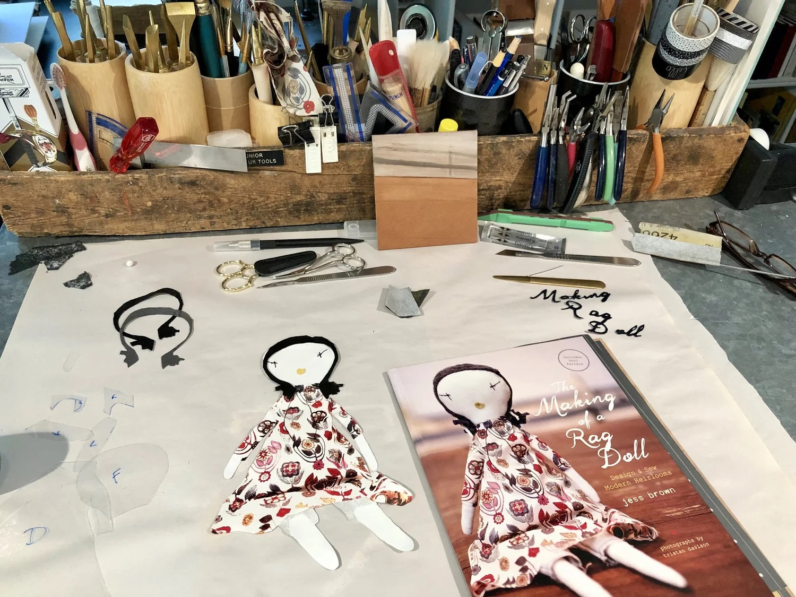
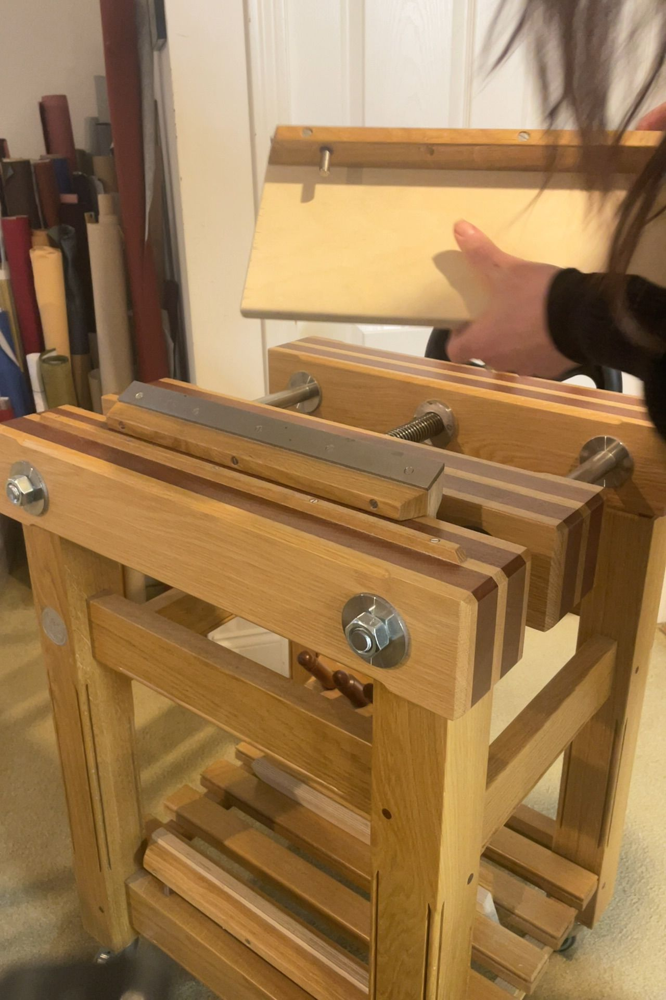
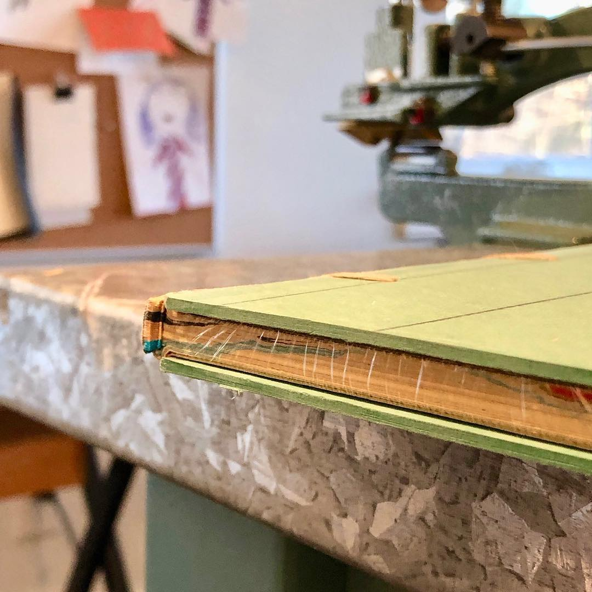
Echo Art Bindery. echoartbindery.com.
MacDonald, J. Ramsay, editor. Women in the Printing Trades: A Sociological Study. P. S. King & Son, 1904. Project Gutenberg, www.gutenberg.org/files/42275/42275-h/42275-h.htm.
Thompson, Deborah Vingerhoet. Personal interview, conducted via FaceTime. 2026.
Middleton, Bernard C. A History of English Craft Bookbinding Technique. Hafner Publishing Co., 1963. Internet Archive, archive.org/details/historyofenglish0000midd.
Van Kleeck, Mary. Women in the Bookbinding Trade. Survey Associates, 1913. Internet Archive, archive.org/details/womeninbookbindi00vankrich.
Echo Art Bindery
MMXXVI